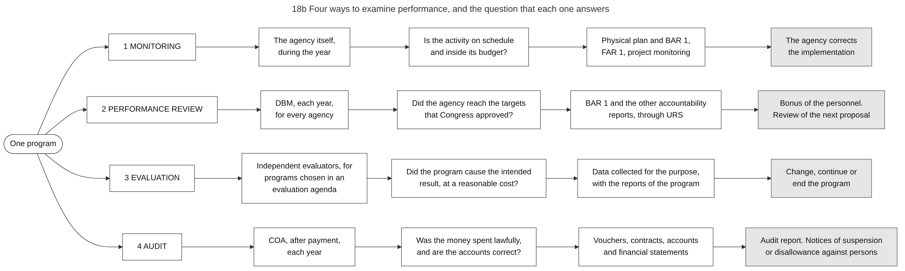

Diagram 18b · Mermaid flowchart
Four ways to examine performance, and the question that each one answers
Question: Monitoring, performance review, evaluation and audit are often named together. What is the difference between them: who does each one, when, on which records, and what may follow from it?

What the diagram shows
- Question: monitoring, performance review, evaluation and audit are often named together. What is the difference between them: who does each one, when, on which records, and what may follow from it?
- Idea: the four examinations answer four different questions about the same program. A program can pass one and fail another. Example: a training program reports all planned courses as held (monitoring and review: target reached), while an evaluation finds that the trained persons did not find work (the intended effect did not occur), and an audit finds that all payments were lawful.
- How to read it: each row is one kind of examination. Column 2 = who does it and when. Column 3 = the question. Column 4 = the records used. Column 5 (grey) = what may follow.
- Sources: row 1, quarterly reports BAR 1 and FAR 1 [JC2019-1]; monitoring of physical and financial progress by the implementing agencies (indicator 11.4, score B) [PEFA2025]; monitoring of selected projects with digital images [ROADMAP-MID]. Row 2, Agency Performance Review and the bonus criteria [PBB2024]; review of the earlier systems, which the order calls "duplicative and redundant with the internal and external performance audit and evaluation systems" [EO61]. Row 3, independent evaluation of programs and projects "in terms of their efficiency, outcomes and impacts", national and agency evaluation agendas, steering committee [NEPF][NEPF-NEWS]. Row 4, audit after payment and the notices that may follow [COA2011-002][COA2009-006]; no formal examination of audit reports by the legislature (indicator 31, score D) [PEFA2025].
- General knowledge, not opened in a source here: the performance audit of COA as a separate kind of audit, and the consequences in column 5 of rows 1 to 3.
Code

---
title: "18b Four ways to examine performance, and the question that each one answers"
config:
flowchart:
wrappingWidth: 900
---
flowchart LR
%% QUESTION THIS DIAGRAM ANSWERS: monitoring, performance review, evaluation and audit are often named together. What is the difference between them: who does each one, when, on which records, and what may follow from it?
%% IDEA: the four examinations answer four different questions about the same program. A program can pass one and fail another. Example: a training program reports all planned courses as held (monitoring and review: target reached), while an evaluation finds that the trained persons did not find work (the intended effect did not occur), and an audit finds that all payments were lawful.
%% READING: each row is one kind of examination. Column 2 = who does it and when. Column 3 = the question. Column 4 = the records used. Column 5 (grey) = what may follow.
%% SOURCES: row 1, quarterly reports BAR 1 and FAR 1 [JC2019-1]; monitoring of physical and financial progress by the implementing agencies (indicator 11.4, score B) [PEFA2025]; monitoring of selected projects with digital images [ROADMAP-MID]. Row 2, Agency Performance Review and the bonus criteria [PBB2024]; review of the earlier systems, which the order calls "duplicative and redundant with the internal and external performance audit and evaluation systems" [EO61]. Row 3, independent evaluation of programs and projects "in terms of their efficiency, outcomes and impacts", national and agency evaluation agendas, steering committee [NEPF][NEPF-NEWS]. Row 4, audit after payment and the notices that may follow [COA2011-002][COA2009-006]; no formal examination of audit reports by the legislature (indicator 31, score D) [PEFA2025].
%% GENERAL KNOWLEDGE, NOT OPENED IN A SOURCE HERE: the performance audit of COA as a separate kind of audit, and the consequences in column 5 of rows 1 to 3.
S(["One program"])
S --> A1["1 MONITORING"] --> A2["The agency itself,<br/>during the year"] --> A3["Is the activity on schedule<br/>and inside its budget?"] --> A4["Physical plan and BAR 1,<br/>FAR 1, project monitoring"] --> A5["The agency corrects<br/>the implementation"]:::rec
S --> B1["2 PERFORMANCE REVIEW"] --> B2["DBM, each year,<br/>for every agency"] --> B3["Did the agency reach the targets<br/>that Congress approved?"] --> B4["BAR 1 and the other accountability<br/>reports, through URS"] --> B5["Bonus of the personnel.<br/>Review of the next proposal"]:::rec
S --> C1["3 EVALUATION"] --> C2["Independent evaluators, for<br/>programs chosen in an<br/>evaluation agenda"] --> C3["Did the program cause the intended<br/>result, at a reasonable cost?"] --> C4["Data collected for the purpose,<br/>with the reports of the program"] --> C5["Change, continue or<br/>end the program"]:::rec
S --> D1["4 AUDIT"] --> D2["COA, after payment,<br/>each year"] --> D3["Was the money spent lawfully,<br/>and are the accounts correct?"] --> D4["Vouchers, contracts, accounts<br/>and financial statements"] --> D5["Audit report. Notices of suspension<br/>or disallowance against persons"]:::rec
classDef default fill:#ffffff,stroke:#444444,color:#111
classDef rec fill:#e6e6e6,stroke:#555555,color:#111